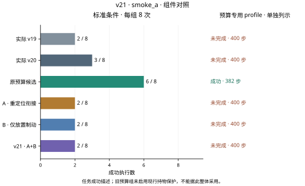
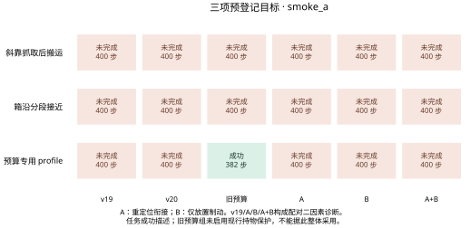

标准条件
预算专用 profile 0/1
最新完整阶段：smoke_a · 下列主数字仅统计标准条件，预算专用profile另列。
标准条件
标准条件
标准条件
标准条件
标准条件
标准条件
完整阶段累计 54 次评估执行。同一条件在不同版本和修订中重复，9个小测试条件包括8个标准条件与1个复用起点的配置profile，不能写成9个独立起点。
规划证书、保存输入回放、物理回放和完整任务成功是不同证据。旧权重冻结；本轮不做泛化训练，也不写论文。
静态证据边界：A完整保留原v19下降入口前三帧反馈，随后仅在远离或名义跨越目标的风险方向保留反馈；B复用v20的积分规则，但仅在实际模式与调用phase均为PLACE且held时启用。CARRY全部子段、terminal carry及已进入RELEASE的末帧沿用实际v19接口。末帧仍可携带之前B已实际提交的积分记忆；接口回退不等于新闭环整条轨迹与历史v19相同。二者只使用当前观测与已有控制历史，保留原比例项和一次速度阻尼。D2名义外推和目标带都是控制启发式，不能替代真实未来状态、几何认证或连续5帧到位。执行前静态检查只能证实公式、输入边界和保护机制，不能证明闭环提速或成功救回。 A静态记录 · B静态记录。
已知诊断案例，不能作为独立泛化结论。预算profile复用旧6000005；v19/A/B/A+B构成两因素2×2配对诊断，完整v21为A+B。实际v20和旧预算组本轮另行重跑，v17仅为历史参考；旧预算组未启用现行持物保护，不能整体采用。
六组各9个已知条件的成功数为实际v19 2、实际v20 3、原预算7、A重定位衔接2、B仅PLACE 2、完整v21 2。没有新增成功，12000036未保留实际v20的成功；三个预登记目标仍未完成。54次物理执行共20255步，9个条件复用8个物理起点。原预算本轮实际重跑但保护不同，不能凭7/9整体采用。另10条原输入重定位回放共4000步仅验证原轨迹与谓词，不增加实验分母。
下一步：按原门槛停止564次扩展、720次开发及1440次独立确认；保留全部版本与本轮失败证据，不做泛化训练。后续仅按已定位瓶颈建立独立候选，重新通过小测试后才恢复大规模阶段。
smoke_a.json · control_conclusions_a.json · smoke_a_recenter_diagnosis.json · development_gate.json
6000005两配置的A/完整组在300–302步与实际v19具有相同观测、D2队列和逐位相同命令；首次命令差在304步，首次观测差在307步。精确原输入回放确认，A/完整组和v19均在316–320连续5帧满足原重定位全部条件，320步退出；实际v20仅出现4帧，335步年龄25超过24而撤回。A在320步侧误差7.077mm、固定回中心距离7.890mm，均小于9mm。重定位相关帧（含规划/退出）为v19/place 10、v20 25、A/v21 9；纯PATH_RECENTER命令分别9、23、8。A晚一控制进入重定位、仍同在320步完成，因此少一相关帧不等于任务净省一步；各新组仍328步CLOSE、362步CARRY。
下一步：保留前三步原反馈作为必要对照，继续使用原9mm、5帧、24步与D2。A可以作为恢复已知重定位进展的候选，但当前证据不支持整体采用或宣称已提高成功率。后续优先处理搬运稳定性和完整阶段预算。
smoke_a_handoff_diagnosis.json · smoke_a_recenter_diagnosis.json · control_conclusions_a.json
A/完整组在364–400执行直接搬运，严格到位区间为387–389三帧、397–400四帧；最大连续帧数由v19的3提高到4，400步位置误差6.084→2.595mm、角误差0.03321→0.02583rad，但仍未满5帧、没有进入PLACE。两配置共享同一物理起点，不能当成两个独立新救回。B严格仅PLACE，在这两配置从未被调用。即使下一步能达到第五帧，也仍有PLACE和RELEASE，不能说整回合只差一步成功，更不能假设400步之后会持续到位。
下一步：下一候选应提前获得稳定的五帧并为PLACE/RELEASE留出预算：先检查末段实测速度、积分和在途D2命令与出入9mm球的关系，再做独立局部消融。保持400步和原全部阈值，不延长回合、不减少确认帧。
12000036中A与v19的400步命令及状态完全相同。B/完整组与v19直到382步保持相同输入轨迹，383步才首次命令不同、386步才首次观测不同；但均391步进入RELEASE，392步提交开爪、D2后394步首次执行，截至400步7次已执行开爪，均失败。实际v20仍390/391/393，尾部8次且400步成功。虽然v19/v20/A/B/完整组均CARRY277、PLACE363及搬运段5/17/55步相同，实际v20与完整v21在PLACE入口EEF位置已差2.630mm、物体位置差2.679mm。390步B/完整组物体高度0.900665m，尚未满足原<0.900m；实际v20为0.899141m，已经满足。B/完整组391步输出标签仍PLACE但实际模式已RELEASE，正确回到父版；该尾帧回退发生在当前释放判据通过之后，不能倒推成390步高度不达标的原因。
下一步：不要把旧成功简单归因于一个可独立移植的PLACE开关。下一步先对齐并检查PLACE入口位姿、实测速度、抓持相对位姿及在途命令，分别隔离搬运末段与PLACE作用范围；只有经过同条件闭环对照才能判断尾帧规则或控制状态的因果作用。
control_conclusions_a.json · smoke_a_handoff_diagnosis.json · trace.jsonl · trace.jsonl
12000011的v19/v20/A/B/完整组第一次220步进入CARRY，首次转向241–310持续70步未到位，311步保护后312步再次进入CARRY。v19/A/B/完整组第二次规划后321–325执行clearance、326–335执行reorient、336–395执行transport，396才进入PLACE；实际v20相应为10/13/57步，400步仍在transport。B单项在此例的整段命令和状态与v19逐位相同，396–400仅5次PLACE提案，积分制动规则没有触发。完整组也未释放，故这是保留父版搬运进度，不能称为任务成功修复。本轮B单项和完整组各92次PLACE提案均实际提交，各27次触发新积分规则；均限实际mode=PLACE且held，未扩散到CARRY或已进入RELEASE的末帧。
下一步：优先解决首次大转向长期不收敛和第二次搬运所消耗的预算，保留原关节、相对位姿、几何、70步阶段限制及400步总预算。PLACE范围收窄可保留为消融条件，但当前没有净成功收益，不能单独推荐采用。
13000021在v19/v20/A/B/完整组仍332步进入CARRY，336步首次路径未确认后重试，337步再次进入CARRY，341步耗尽尝试。13000022的v19/v20/A/B/完整组仍387步才进入DESCEND，截至400步仍PATH_RECENTER，尚未搬运。局部搜索未确认不等于物理不可达；下游PLACE制动也无法解决未进入PLACE的轨迹。本文的持物位姿五帧统计适用于CARRY路径；EDGE与recenter也各自保留原五帧，PLACE释放继续使用原物体XY、高度及年龄条件。
下一步：后续把有界路径验证与箱沿接近耗时分开定位，沿用源绑定原轨迹、真实失败条件与相同保护进行小消融。先处理这些阶段性否决项，再考虑扩大测试；当前不写论文、不做泛化训练。
smoke_a_handoff_diagnosis.json · smoke_a_handoff_diagnosis.csv · control_conclusions_a.json
预定 564 次；完整记录 0 次。
预定 720 次；完整记录 0 次。
预定 1440 次；完整记录 0 次。
小测试54次；消融564次；开发共720次，分别为v19、v20和v21各240次；独立确认v6/v20/v21共1440次，须先冻结，再使用全新起点。未运行的数据不会填成结果。
| 阶段 | 成功数 / 执行数 | 门槛状态 | 原始依据 |
|---|---|---|---|
| smoke_a | 实际 v19 2/9 · 实际 v20 3/9 · 原预算候选 7/9 · A · 重定位衔接 2/9 · B · 仅放置制动 2/9 · v21 · A+B 2/9 | 结果门槛未通过 | 统计 · 配对CSV · 条件 · 执行源码哈希 · 动作核验 · 物理回放 |
已通过的动作核验共 20,255 控制步；物理回放 54 回合、20,255 步。回放不增加成功率样本。
8个标准条件与1个复用起点的配置分开命名；表中每项均链接本轮实际结果与逐步轨迹。
不把任意条件顺序连成趋势线，不对已知小测试附加泛化区间。每图提供600 dpi位图、矢量文件和绘图数据，来源哈希在图表目录中。


最新阶段A实际控制212次，入口窗口42次、窗口之后170次；轴向反馈56次、横向反馈132次。方向标记可在同一控制重叠，不能相加成独立控制数。B实际PLACE范围内提案184次、实际提交184次；其中积分规则触发54次、实际提交54次。范围提案数与积分触发数不同，不能相加。未触发分支只能引用对应静态或组件检查。本轮混合几何拒绝0次、父保护替换0次；负路径测试不等于在真实闭环中触发。
上述静态与机制检查不增加评估样本。动作和物理回放链接见执行记录；页面外观、PDF字体和Git同步另由交付回执证明。
本页没有新增v21演示视频。查看v14原始对比演示 ↗，其中动作与结果仍属于历史v14实验，不能视为本轮成果。